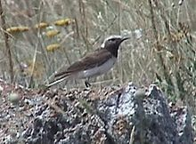
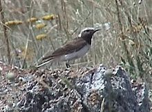

| Pied Wheatear | |
|---|---|
|  | |
| Conservation status | |
| Binomial name | |
| Oenanthe pleschanka (Lepechin, 1770) |
| Pied Wheatear | |
|---|---|
|  | |
| Conservation status | |
| Binomial name | |
| Oenanthe pleschanka (Lepechin, 1770) |
The Pied Wheatear, Oenanthe pleschanka, is a wheatear, a small insectivorous passerine that was formerly classed as a member of the Thrush family Turdidae, but is now more generally considered to be an Old World flycatcher, Muscicapidae.
This migratory central Asiatic wheatear occurs from the extreme southeast of Europe to China, and has been found wintering in India and northeastern Africa. It is a very rare vagrant to western Europe.
In summer the male is a white and black bird. The white crown tinged with grey contrasts with the black face and throat. The female is browner, and the head is washed with sandy buff. Females are darker than Northern Wheatear, look smaller and showed less white on the rump.
The tail and rump are white, with an inverted black T giving a pattern like Black-eared Wheatear. This 13.5-14.5 cm bird nests on open, stony, sparsely vegetated habitats, laying 4-6 eggs in a rock crevice. It eats insects and berries.

{kind=link}